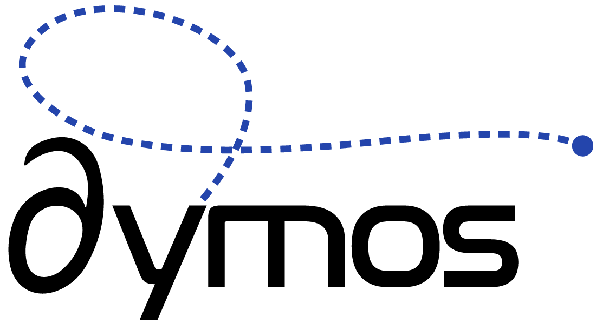

Multidisciplinary Optimal Control Library¶
The goal of Dymos is to enable the optimization of subsystem designs which are tightly connected with each other as well as the operation of the overall system.
Dymos is a library for the optimal control of dynamic multidisciplinary systems. While it can optimize typical optimal control problems, its key feature is the ability to optimize systems in which a trajectory is just one part of the overall optimization. Other optimization software frequently relies on the parameterization of the hardware models to, for instance, approximate the mass of an engine as a function of its thrust level. Instead, Dymos allows you to impose higher-fidelity design considerations on these subsystems - from simple parameterized models to high-fidelity CFD models, and apply the resulting subsystem designs to the trajectory profile.
To do this, Dymos relies on ability of OpenMDAO to compute accurate derivatives very efficiently. This capability enables users of Dymos to embed iterative procedures within their system dynamics. While normally this would significantly impair performance, Dymos can optimize such systems with minimal performance degradation, freeing the user from reformulating their design specifically for the purposes of the optimal control implementation.
Key Features¶
- Employ Gauss-Lobatto collocation1 or the Radau Pseudospectral method2 to find optimal control for a dynamic system.
- Find the optimal design of a system that can satisfy a variety of different trajectories.
- Embed nonlinear solvers within the system dynamics.
- Transform typical state variables into control variables (differential inclusion 3).
- Use nonlinear solvers to satisfy the collocation constraints.
- Single and multiple shooting within the same interface.
- Leverage multiprocessing capabilities to improve performance
Why Dymos?¶
There is no shortage of optimal control software based on pseudospectral approaches. There are a number of other optimal control libraries that tackle similar kinds of problems, such as OTIS4 4, GPOPS-II 5,and CASADI 6.
Given the amount of software existing in this space, why did we develop Dymos?
We wanted to use optimal control in the context of multidisciplinary optimization. With existing state-of-the-art tools, this would mean wrapping one of these existing tools and passing between different disciplines. But for performance reasons, we also wanted to be able to pass derivatives between our different disciplines, including trajectory design. This approach drives us towards a "monolithic" optimization problem, where a single objective is optimized that encompasses information from all of the subsystems. The "collaborative" optimization approach that optimizes each subsystem with a minimal amount of information passing our subsystem boundaries is generally slower and fails to find solutions as good as the monolithic approach. The first objective, therefore, was to develop optimal control software that has the capability to provide accurate, analytic derivatives.
Many state-of-the-art optimal control software packages rely on finite-differencing to estimate derivatives needed by the optimizer to solve the problem, although that is beginning to change. This inherently couples the accuracy of the derivatives to the scaling of the problem. We'd like to use analytic derivative calculations to better decouple this interaction. Even those software packages which employ analytic derivatives generally use a forward-differentiation approach. The work of Hwang and Martins 7 demonstrated how to develop a framework for accurate derivative calculation, including analytic derivatives and both complex-step and finite-difference approximations as fallbacks. Their approach gives us a few key capabilities:
- Adjoint differentiation which can be more efficient for pure shooting-methods in optimal control, where the number of constraints/objectives is far fewer than the number of design variables.
- The ability to compute derivatives across complex iterative systems without the need to reconverge the system.
- The ability to provide a general, bidirectional derivative coloring system 8 which can minimize the computational effort required to compute the sensitivies of the outputs with respect to the inputs.
In addition to making optimal control more performant for use in multidisciplinary optimization, we were keen to study what sort of work these capabilities could enable. Embedding iterative systems within the optimization, in particular, is generally avoided for performance reasons. But with the state-of-the-art differentiation approach of OpenMDAO, built upon the work of Martins and Hwang, we can embed complex implicit systems with minimal impact on performance. This enables more efficient optimization via differential inclusion 3, and allows us to employ shooting methods within the pseudospectral framework.
Some developers involved in Dymos are involved with NASA's legacy optimal control software, OTIS. The general approach used by Dymos is similar to that of OTIS (trajectories divided into time portions called Phases, dynamic controls and static parameters, and both bound constraints as well as nonlinear boundary constraints and path constraints are all notions carried over from OTIS. OTIS was pioneering software and offers some great capabilities, but it also lacks a lot of desirable modern features that have been developed by the community since its inception over thirty years ago. Dymos features a more modular way for users to define their dynamics, additional pseudospectral methods, and better differentiation approaches for more reliable convergence.
Citation¶
If you utilize Dymos in your work, please reference it using the following citation.
@inbook{falck2019,
author = {Robert D. Falck and Justin S. Gray},
title = {Optimal Control within the Context of Multidisciplinary Design, Analysis, and Optimization},
booktitle = {AIAA Scitech 2019 Forum},
chapter = {},
pages = {},
doi = {10.2514/6.2019-0976},
URL = {https://arc.aiaa.org/doi/abs/10.2514/6.2019-0976},
eprint = {https://arc.aiaa.org/doi/pdf/10.2514/6.2019-0976}
}
References¶
-
Albert L Herman and Bruce A Conway. Direct optimization using collocation based on high-order gauss-lobatto quadrature rules. Journal of Guidance, Control, and Dynamics, 193:592–599, 1996. ↩
-
Divya Garg, Michael A Patterson, Camila Francolin, Christopher L Darby, Geoffrey T Huntington, William W Hager, and Anil V Rao. Direct trajectory optimization and costate estimation of finite-horizon and infinite-horizon optimal control problems using a radau pseudospectral method. Computational Optimization and Applications, 492:335–358, 2011. ↩
-
Hans Seywald. Trajectory optimization based on differential inclusion Revised. Journal of Guidance, Control, and Dynamics, 173:480–487, may 1994. URL: https://doi.org/10.2514/3.21224, doi:10.2514/3.21224. ↩↩
-
Stephen W Paris, John P Riehl, and Waldy K Sjauw. Enhanced Procedures for Direct Trajectory Optimization Using Nonlinear Programming and Implicit Integration. In Proceedings of the AIAA/AAS Astrodynamics Specialists Conference and Exhibit, number 2006–6309. American Institute of Aeronautics and Astronautics, 2006. ↩
-
Michael A Patterson and Anil V Rao. Gpops-ii: a matlab software for solving multiple-phase optimal control problems using hp-adaptive gaussian quadrature collocation methods and sparse nonlinear programming. ACM Transactions on Mathematical Software TOMS, 411:1, 2014. ↩
-
Joel A E Andersson, Joris Gillis, Greg Horn, James B Rawlings, and Moritz Diehl. CasADi – A software framework for nonlinear optimization and optimal control. Mathematical Programming Computation, 11:1–36, 2019. ↩
-
John T. Hwang and Joaquim R.R.A. Martins. A computational architecture for coupling heterogeneous numerical models and computing coupled derivatives. ACM Trans. Math. Softw., June 2018. URL: https://doi.org/10.1145/3182393, doi:10.1145/3182393. ↩
-
Justin S Gray, Tristan A Hearn, and Bret A Naylor. Using graph coloring to compute total derivatives more efficiently in openmdao. In AIAA Aviation 2019 Forum, 3108. 2019. ↩